Tools exist which allow vector graphic images (SVGs) to be manipulated. For example it is possible to recolor existing illustrations. This can be useful to try out different themes for icons, logos and even create new color palettes.
Tools such as Illustrator have more advanced illustration capabilities in using prompts to generate vector graphic scenes, logos and adding vector graphics to existing artwork.
Illustrator Prompts In Existing Artwork
Illustrator now allows you to add to vector artwork by using generative prompts to add elements to the scene. This is done by selecting the area to generate using a filled shape. Next the text prompt is typed in the sidebar, with users choosing from the variations generated. You can also choose to match the existing look of the vector illustration and create an additional subject/scene/icon/pattern.
The example below adds a vector tent and boat to the scene that mimics the existing background art style.
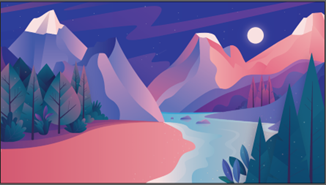 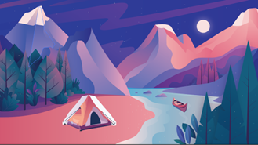Illustrator Prompt to Vector Tool
Generating a vector is done by defining the vector area by using a filled shape. Prompts typed in should be specific and focus on features you want to highlight in the artwork. Illustrator struggles with generating realistic human anatomy, and has issues with objects blending into each other. It generally follows the style and color scheme asked for in prompts.
Prompt used: Canoe with paddle on water. Uses the option to match existing artwork. Visual issues with the paddle blending into the boat or not being in the correct position.
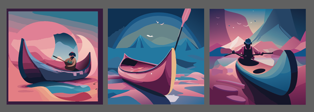Prompt used: Vector Post apocalypse city with a sunset
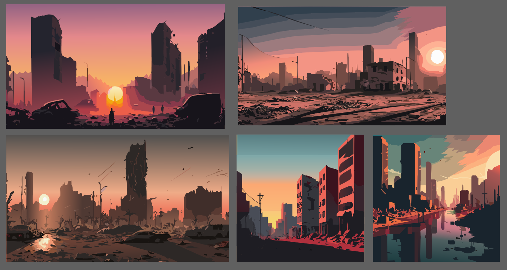For Illustrator
Creating patterns/icons is done in a similar way to creating vector artwork. A filled shape is drawn and then the users types the prompt and selects from variations. Results here were not as good as text to vector artwork. There are various inaccuracies with the realism of objects and blending due to a lack of reference material.
Additionally for patterns the requested subject material often does not match the prompt given. For example a boat with oars pattern was requested but the material generated does not depict a boat but rather various abstract shapes.
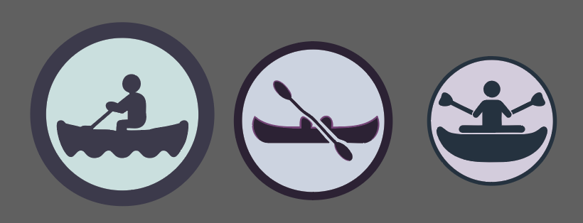 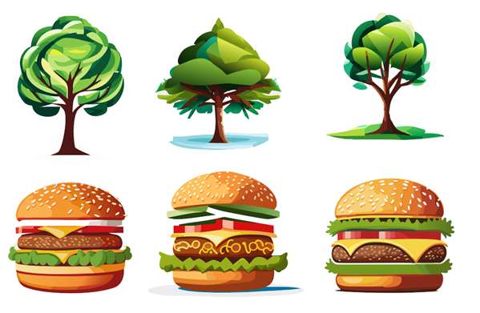 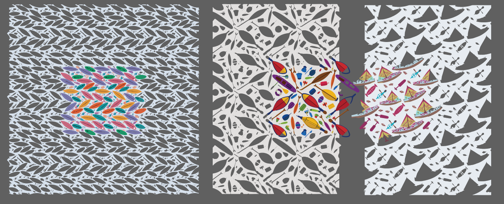Adobe Firefly is a set of generative AI tools that includes the ability to recolor vector images.
Generative Recolor
This tool is good at generating variations of vector images that are less realistic with clearly separated elements.
User files can be uploaded, variations created and downloaded.
It is import to note that all paths for the entire vector image must be closed for the generation to succeed. Also it appears that any shaded areas cannot be recolored.
You can not adjust individual elements of the vector image. Users can choose from preset backgrounds, and tailer the results by choosing color schemes (such as "complimentary"), adding "required" colors, and modifying the prompt text.
The snapshot shows an example of the options chosen.
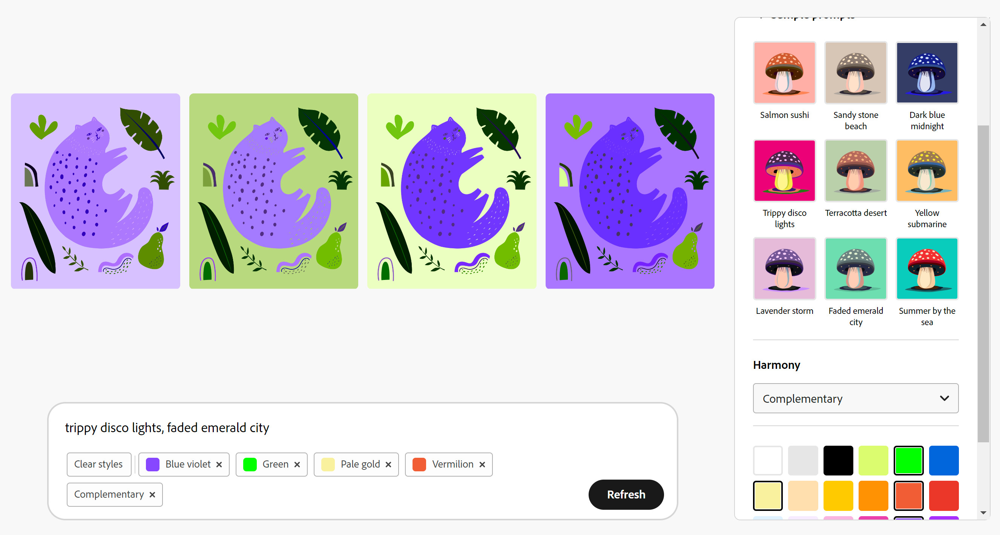Prompt: trippy disco lights, faded emerald city, disco cat, disco cat 2, emerald city cat
Disco Cat 1
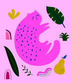Disco Cat 2
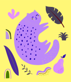Emerald City Cat
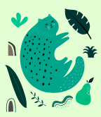In order to include the preset style options in the UI, you need to manually include the preset style prompt text into your current prompt. It would be useful to have the existing prompt modify when style option are modified.
Prompt: monotone, black light grey, white, triad
Result:
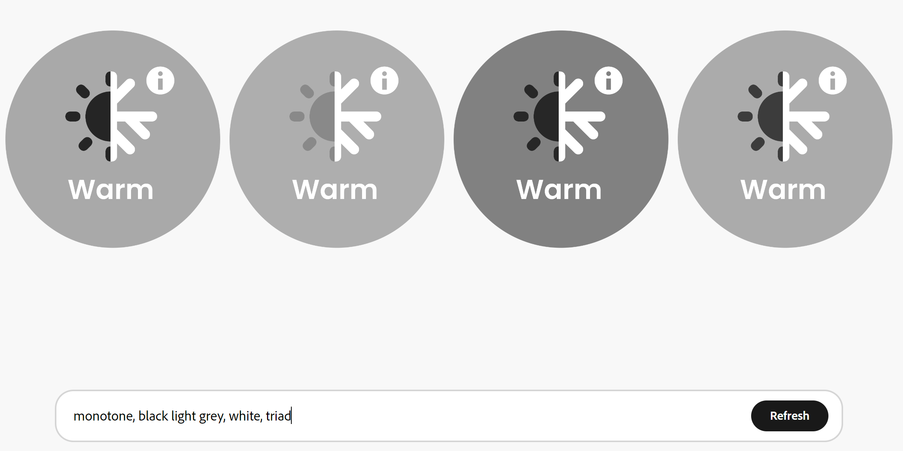Original: